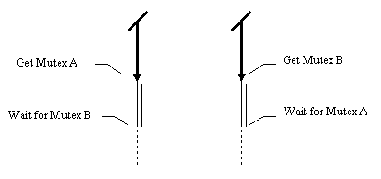

Chapter 7. Mutex programming guidelines. Concurrency control.
In this chapter:
Time to introduce a little
style?
Most of the examples presented so far in this tutorial have been fairly
rough and ready. When designing reusable components, or the framework for
a large multithreaded application, a "fly-by-night" approach is not appropriate.
The application writer or component designer needs to construct classes
that have thread safety built in, that is, classes which assume that they
may be accessed from different threads, and contain appropriate internal
mechanisms to ensure that data is kept consistent. In order to do this,
the component designer needs to be aware of some problems which crop up
when using mutexes in increasingly complicated applications. If you are
attempting to write thread safe classes for the first time, don't be put
off by the apparent complexity of some of the issues in this chapter. Quite
often a simplistic solution can be adopted, which avoids many of the issues
mentioned in this chapter, at the cost of some efficiency. Note that text
which mentions "mutexes" from here on applies equally well to critical
sections; I omit mentioning the latter in every case merely for brevity.
Deadlock due to mutex ordering.
If a program contains more than one mutex, then it is surprisingly easy
to deadlock a program with sloppy synchronization code. The most common
situation is where a cyclic dependency exists with the order in which mutexes
are acquired. This is often known in the academic literature as the dining
philosophers problem. As we have seen before the criteria for deadlock
is that all the threads are waiting for another thread to release a synchronization
object. The simplest example of this is between two threads, one of which
acquires mutex A before acquiring mutex B, and the other of which acquires
mutex B before acquiring mutex A.

Of course, it is entirely possible to deadlock a program in more subtle
ways with a cyclic chain of dependencies, such as the one illustrated below
with four threads, and four mutexes, A to D.
Obviously, situations like this are not acceptable in most applications.
There are several ways of removing this problem, and a couple of techniques
which alleviate dependency problems of this sort, making deadlock removal
that much easier.
Avoiding
thread deadlock by letting a wait time out.
The Win32 functions dealing with mutexes do not require that a thread
wait for ever to acquire a mutex object. The WaitForSingleObject function
lets one specify a time that the thread is prepared to wait for. After
this time has expired, the thread will be unblocked, and the call will
return an error code indicating that the wait timed out. When using mutexes
to enforce access around a critical region of code, one does not normally
expect the thread to have to wait very long, and a time-out set in terms
of a few seconds may well be adequate. If your thread uses this method,
then it must of course cope with failure in a sensible way, perhaps by
retrying, or giving up. Of course, users of critical sections do not have
this luxury, since the critical section wait functions wait for ever.
Avoiding
thread deadlock by imposing an ordering on mutex acquisition.
Although it's a good idea to be able to cope with failure to acquire a
mutex, it makes good sense to ensure that deadlock situations do not happen
in the first place. Since this sort of deadlock is caused by cyclic dependencies,
it can be eliminated by imposing an ordering on the acquisition of mutexes.
This ordering is very simple. Lets say that we have a program with mutexes
M1,
M2,
M3, ... Mn, where one or more of these mutexes may be acquired
by the threads in a program.
-
Deadlock will not occur provided that for some arbitrary mutex Mx,
threads only try to acquire mutex Mx if they do not currently have
ownership of any mutexes of "higher priority", that is M(x+1) ...
Mn.
Sound a bit abstract? Let's take a fairly simple concrete example. In this
part of the chapter I refer to "locking" and "unlocking" objects. This
terminology seems appropriate when a mutex is associated with a piece of
data, where atomic access to that data is required. One should note that
this effectively means that each thread gains ownership (acquires) the
mutex before accessing an object, and gives up ownership of (releases)
the mutex after accessing it: the operations are identical to those previously
discussed, the only change is in terminology, which at this juncture, is
more appropriate to an OO model. In this sense, Object.Lock can
be considered completely equivalent to EnterCriticalSection(Object.CriticalSection)
or perhaps WaitForSingleObject(Object.Mutex,INFINITE).
We have a list data structure which is accessed by several threads. Hanging
off the list are some objects, each one of which has its own mutex. For
the moment, we will assume that the list structure is static, does not
change, and can thus freely be read by threads without any locking. Threads
operating on this data structure want to do one of several things:
-
Read an item by locking it, reading the data, and then unlocking it.
-
Write to an item by locking it, writing the data and then unlocking it.
-
Compare two items, by looking them up in the list, locking both items,
and then performing the comparison.
Simple pseudocode for these functions, ignoring typecasts, exception handling,
and other such non-central issues, might look something
like this.
Let's imagine for a moment that a thread is told to compare items X
and Y in the list. If the thread always locks X then Y, then a deadlock
may occur if one thread is told to compare items 1 and 2, and another thread
is told to compare items 2 and 1. One simple solution is to always lock
the lowest numbered item first, or to sort the input indexes, perform the
locking, and adjust the results of the comparison appropriately. However,
a more interesting situation is where an object contains details of another
object that comparison is required with. In this situation, a thread may
lock the first object, get the index of the second object in the list,
find that it is lower on down the list, lock it, and then proceed. All
very easy. The problem occurs when the second object is higher up in the
list than the first object. We cannot lock it immediately, since to do
so would invite deadlock. What we must do is unlock the first object, lock
the second object, and then relock the first object. This ensures that
deadlock will not occur. Here
is an example indirect comparison routine representative of this approach.
Out of the frying
pan and into the fire!
Although this avoids deadlock, it opens another can of worms. In the delay
between unlocking and relocking the first object, we cannot be sure that
another thread has not modified the first object behind our back. This
is because we have performed a composite operation: the entire operation
is no longer atomic. Solutions to this are discussed further down the page.
Avoiding thread
deadlock the "slacker way" by letting Win32 do it for you.
Mindful of the mental gymnastics that these problems can present, those
lovely OS designers at Microsoft have provided another way of solving this
problem via another Win32 synchronization function: WaitForMultipleObjects(Ex).
This function lets the programmer wait for and acquire multiple synchronization
objects (including Mutexes) at once. In particular, it lets a thread wait
until one or all of a set of objects are signalled (in the case of mutexes
this is equivalent to "not owned"), and then acquire ownership of the signalled
objects. This has the great advantage that if two threads wait for mutexes
A and B, it does not matter which order they specify them in the set of
objects to wait for, either none of the objects will be acquired, or they
will all be acquired atomically, so it is impossible to cause deadlock
in this manner.
This approach also has several disadvantages. The first disadvantage
is that since all the synchronization objects have to be signalled
before any of them are acquired, it is possible that a thread waiting
for a large number of objects will not acquire ownership for a long time
if other threads are acquiring the same synchronization objects on a one
by one basis. For example, in the diagram below, the leftmost thread performs
a wait for mutexes A, B and C, whilst the other three threads acquire each
mutex individually. In the worst case, the thread waiting for multiple
objects might never get ownership at all
The second disadvantage is that it is still possible to fall
into the deadlock trap, this time not with single mutexes, but with sets
of several mutexes at once! It should be plain to see that the following
diagram illustrates a situation that will result in deadlock as surely
as the example presented at the beginning of this chapter.
The third disadvantage which this approach has, in common with the "time
out" method of deadlock avoidance is that it's not possible to use these
functions if you are using critical sections; the EnterCriticalSection
function does not allow you to specify a timeout value, nor does it return
an error code.
Atomicity
of composite operations - optimistic versus pessimistic concurrency control.
When thinking about mutex ordering earlier, we encountered a situation
where it was necessary to unlock and subsequently relock an object in order
to respect mutex ordering. This means that several operations have occurred
on an object, and the lock on that object has been released in between
operations.
Optimistic concurrency control.
One way of dealing with the problem is to assume that this sort of thread
interference is unlikely to occur, and to simply cross check for the problem
and return an error if it does happen. This is often a valid way of dealing
with the problem in complex situations where the "loading" of a data structure
by various threads is not too high. In the case presented earlier, we can
trivially check for this by keeping a local copy of the data, and checking
that it is still valid after relocking both objects in the required order. Here
is the modified routine.
With more complicated data structures, one may sometimes resort to globally
unique ID's or version stamps on pieces of data. On a personal note, I
recall working with a group of other students on a final year university
project where this approach worked very well: a sequence number was incremented
whenever a piece of data was changed (in this case the data consisted of
appointments in a multi-user diary). The data was locked during reading,
subsequently displayed to the user, and if the user edited the data, the
number was compared with that obtained by the user on the last read, and
the update abandoned if the numbers did not match.
Pessimistic concurrency
control.
We might take a slightly different approach to this problem by considering
that the list itself is likely to be modified and thus requires its own
lock. All operations which read from or write to the list, including lookups,
must lock the list first. This then provides an alternative solution to
the problem of cleanly locking several objects in the list. Let's review
the operations we will want to perform again, with an eye on the slightly
modified locking scheme.
A thread may want to read and modify the contents of an object hanging
off the list, but without modifying the existence of the object or its
placement in the list. This operation takes a long time, and we don't want
to impede other threads who may want to deal with other objects, so the
thread modifying the object must perform the following operations.
-
Lock the list.
-
Look up the object in the list.
-
Lock the object.
-
Unlock the list.
-
Perform the operation on the object.
-
Unlock the object.
This is great because even if the read or write operation on the object
takes a long time, it will not have the list locked for that time, and
thus will not delay other threads who may want to modify other objects.
A thread may delete an object by performing this algorithm:
-
Lock the list.
-
Lock the object.
-
Remove the object from the list.
-
Unlock the list.
-
Delete the object (subject to possible restrictions on deleting a mutex
that is locked).
Note that it is possible to unlock the list before finally deleting the
object, since we have removed the object from the list, and we know that
no other operations on the object or the list are in progress (having both
locks).
Here comes the interesting part. A thread can compare two objects by
performing an algorithm simpler than ne one mentioned in the previous section:
-
Lock the list.
-
Look up the first object.
-
Lock the first object.
-
Look up the second object.
-
Lock the second object.
-
Unlock the list.
-
Perform the comparison.
-
Unlock both objects (in any order).
Note that in the comparison operation, I haven't stated any restrictions
on the order in which the locks on objects are acquired. Does this create
a deadlock? The algorithms presented do not need the criteria for avoiding
deadlock presented at the start of this chapter, yet deadlock never occurs.
It never occurs because when a thread locks an object mutex, it already
has ownership of the list mutex, and thus provided it locks several objects
without releasing the list mutexes, the composite locking of several objects
appears atomic. As a result of this, we can qualify the deadlock criteria
above:
-
Deadlock will not occur provided that for some arbitrary mutex Mx,
threads only try to acquire mutex Mx if they do not currently have
ownership of any mutexes of "higher priority", that is M(x+1) ...
Mn.
-
Additionally deadlock will not occur if Mutexes are acquired out of order
(breaking the above criteria), and for any group of mutexes involved in
an out of order acquisition, all sets of locking operations on those mutexes
are made atomic, normally by enclosing the locking operations inside a
critical section (obtained by locking another mutex).
Avoiding "holes" in
the locking scheme.
It is worth noting at this point that the example above is typical of locking
code that is very sensitive to ordering. Above all this should indicate
that when devising non-trivial locking schemes, great care must be taken
in the ordering of events.
If you can ensure that your program will only run under Windows NT (or
2K), then the Windows API does in fact provide a solution to the composite
operation problem when unlocking and relocking objects. The SignalObjectAndWait
API call allows you to atomically signal (or release) one synchronization
object, and wait for another. By keeping these two operations atomic, you
can transfer a locked state from one object to another, whilst also ensuring
that no other threads have modified the state of the objects during the
transfer. This means that optimistic concurrency control is not necessary
in such situations.
Confused yet? You
can throw in the towel!
If you've managed to keep reading up to this point, then congratulations,
you've achieved a basic understanding of the problems which give multithreaded
application writers considerable food for thought. It is useful to stress
that complicated locking schemes on internal data structures are often
only necessary for high performance systems. Small desktop applications
can often get away with less complicated approaches. There are a couple
of ways of "throwing in the towel".
-
Don't worry about efficiency, and lock the lot.
-
Throw all the data into the BDE.
Locking all shared data is often fine if one is willing to sacrifice some
efficiency. Most users prefer a program that runs slightly slowly to one
that crashes at unpredictable intervals due to a subtle error in the locking
scheme. If one has large amounts of data that need to be persistent in
some manner, then putting all the data into the BDE is another approach.
All (half way decent) database engines are inherently thread safe, which
means that you can access your data with no problems from separate threads.
If you do use a database engine, then you may have to learn a little about
transaction management, i.e.. reservation, and the usage of prepare,
commit and rollback semantics, but take to heart that this is
just the transaction based approach to solving concurrency problems, and
simply a different side to the same coin; most of the hard coding and head
scratching has been done for you. Using the BDE with threads is covered
later.
[Contents] [Previous][Next]
© Martin Harvey
2000.